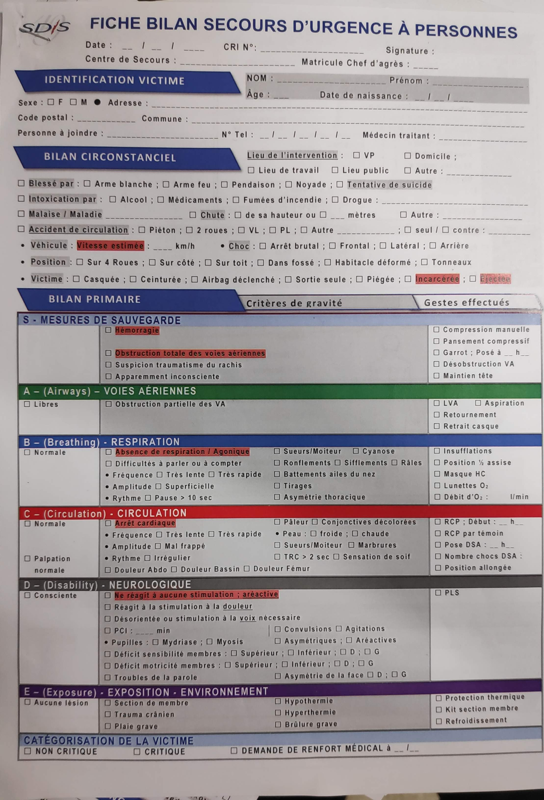
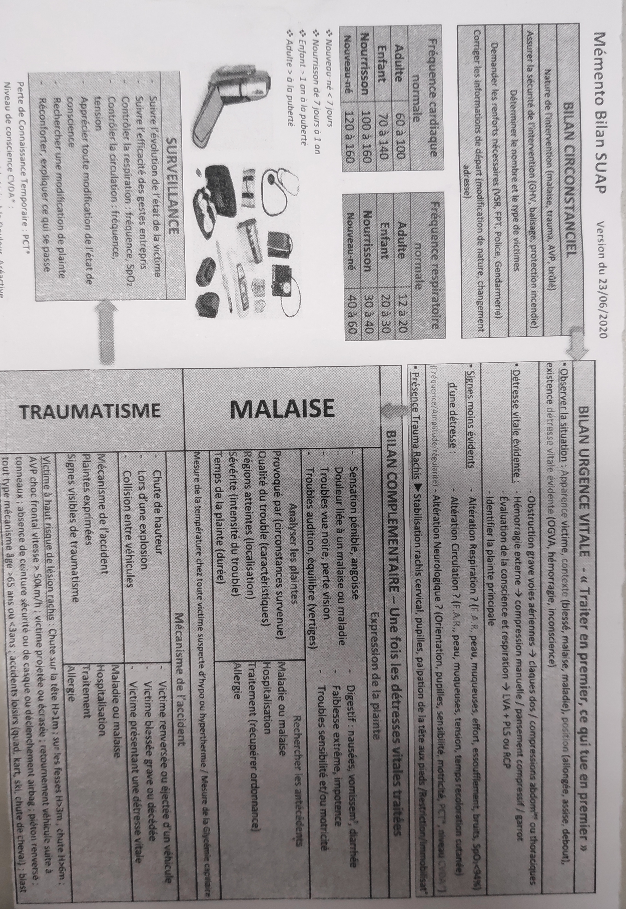
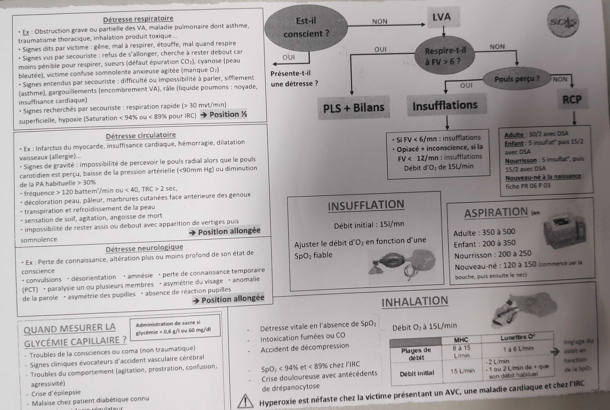
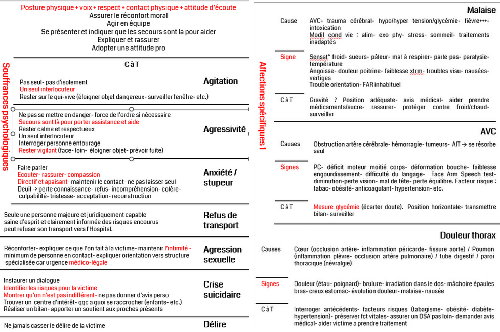
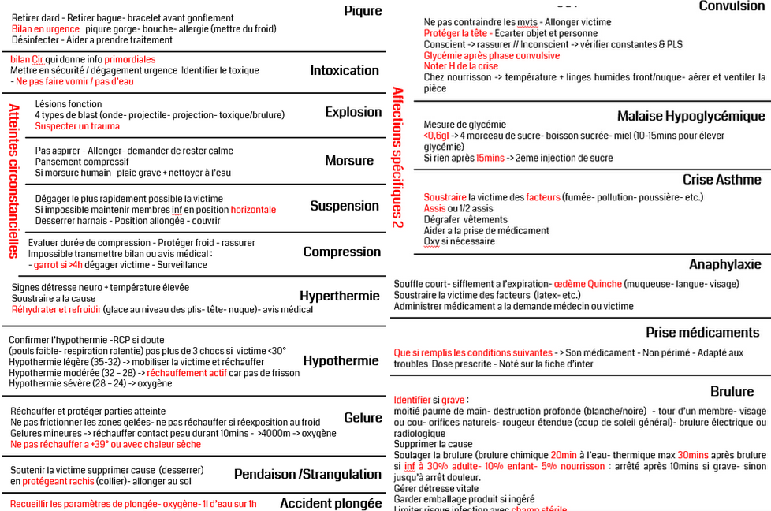
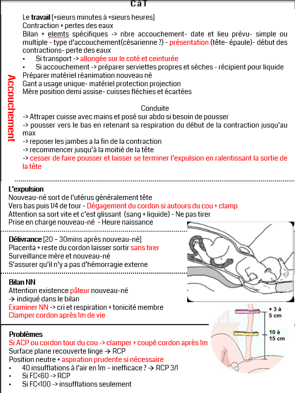
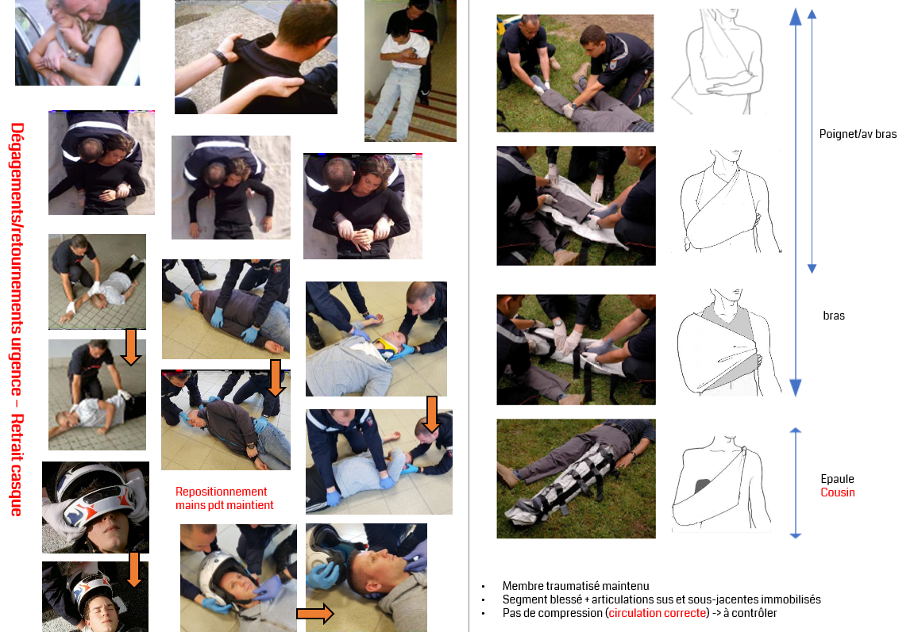
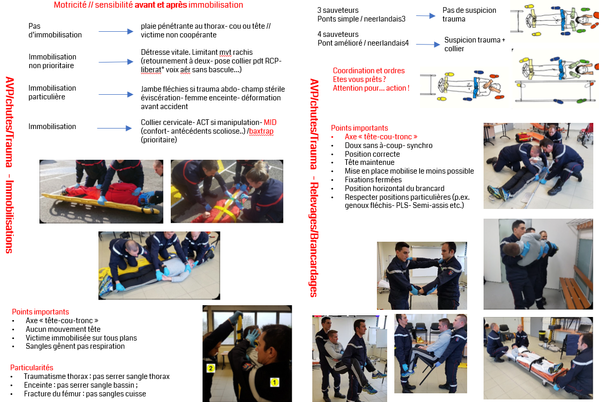

Urgence et bilan



Affections spécifiques


Accouchement

Manœuvres et immobilisations


Fiches de révision sur le bilan, les affections spécifiques, l’accouchement et les immobilisations.







